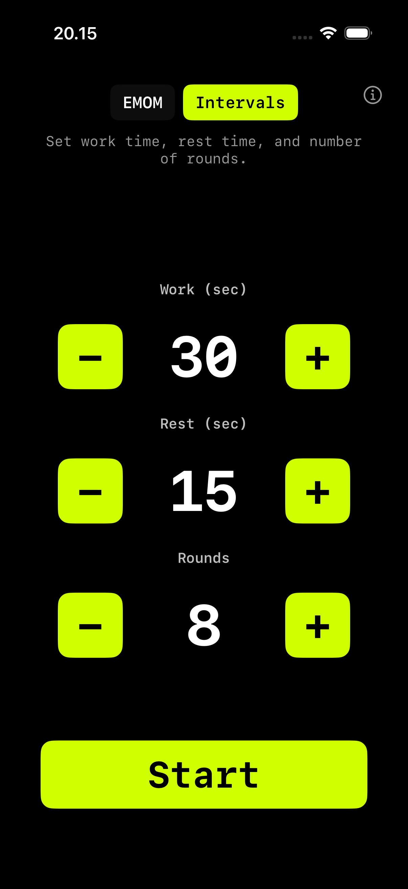

Work · Rest · Repeat
Interval Timer
til HIIT
Sæt work (5–300 sekunder), rest (0–180 sekunder) og runder (1–60). Tryk Start. Lyd-cues og haptisk feedback fortæller dig hvornår du skal push og hvornår du skal trække vejret. Kører på iPhone, iPad, Apple Watch, Mac og Apple TV — ingen login, ingen abonnement, ingen reklamer.
Download i App Store iPhone · iPad · Apple Watch · Mac · Apple TV
Hvad er interval-træning?
Interval-træning veksler mellem faste perioder af arbejde og hvile. Modsat EMOM hvor pausen er den tid du har tilbage, giver intervals dig dedikerede work- og rest-faser.
Det gør formatet ideelt til HIIT, Tabata, circuit training og conditioning-arbejde. Du styrer intensiteten ved at justere forholdet mellem work og rest og antal runder.

Sådan fungerer intervals i WODrounds
-
Sæt din work-tid
Vælg hvor mange sekunder du arbejder hver runde. Fra korte 10-sekunders bursts til lange 60-sekunders sæt.
-
Sæt din rest-tid
Vælg din pause mellem runder. Kort pause til intensitet, længere pause til styrkearbejde.
-
Sæt antal runder
Vælg antal runder. 8 til Tabata. 12 til en hurtig circuit. 20 til udholdenhed.
-
Work / Rest cues
Klare lyd- og haptiske cues fortæller dig hvornår du skal starte arbejdet og hvornår du skal hvile. Du behøver ikke kigge på skærmen.
Eksempler på interval-workouts
Hurtig HIIT (12 min)
Intervals · Work 30s · Rest 15s · 16 runder
- Veksl mellem 4 øvelser:
- Mountain climbers
- Dumbbell thrusters
- Box jumps
- Roning
Conditioning (10 min)
Intervals · Work 40s · Rest 20s · 10 runder
- Vælg én øvelse per runde
- Fokus på at holde intensiteten
- 2:1 work-to-rest ratio
Sprint Intervals (8 min)
Intervals · Work 15s · Rest 45s · 8 runder
- 15 sekunders all-out indsats
- 45 sekunders fuld restitution
- Assault bike, romaskine eller sprints
Start dit interval-workout
Findes til iPhone, iPad, Apple Watch, Mac og Apple TV.
Download WODrounds Ingen login. Virker offline.Relateret
-
EMOM Timer →
Every Minute on the Minute. Sæt runder og rundelængde til CrossFit-style pacing.
-
Tabata Timer →
20 sekunders work, 10 sekunders rest, 8 runder. Den klassiske Tabata-protokol i WODrounds.
-
Timer Guide →
Lær hvornår du skal bruge EMOM vs. intervals vs. Tabata og hvordan du opsætter hver format.